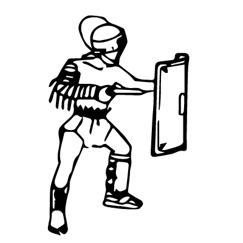

The secutor ("pursuer") developed to fight the retiarius. He carried the tall rectangular shield and the gladius. The helmet of the secutor covered the entire face with the exception of two small eye-holes in order to protect his face from the thin prongs of the trident of his opponent. The helmet was also round and smooth so that the retiarius net could not get a grip on it.
Select
Back